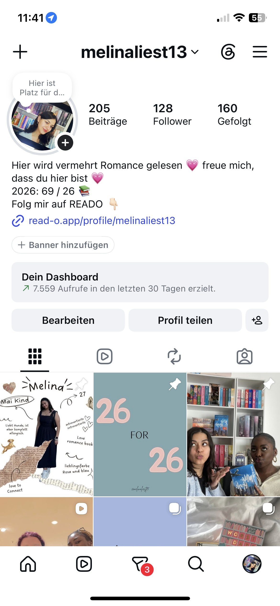
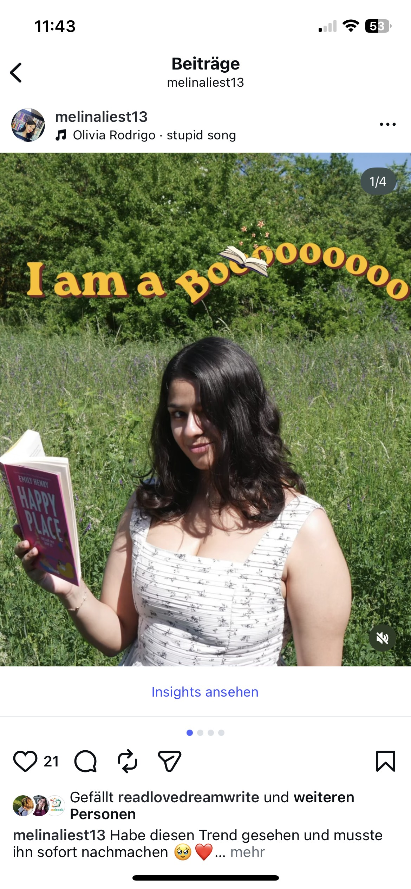
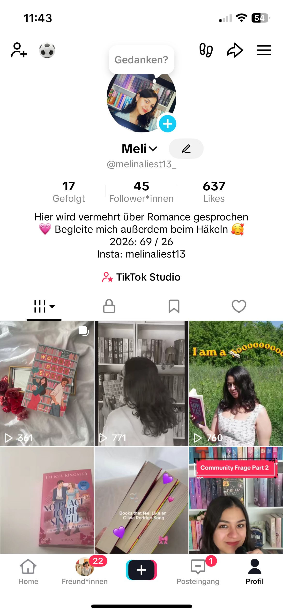

B.A. Medienwissenschaft
Philipps-Universität Marburg
Schwerpunkt auf Medien, Kommunikation und wissenschaftlichem Arbeiten.
Über mich
Redaktioneller Blick trifft kreative Mediengestaltung. Ich verbinde journalistisches Arbeiten mit Social Media, Content Creation und KI-gestützten Medienprojekten.

Mein Weg
Mein beruflicher Weg verbindet wissenschaftliches Arbeiten, journalistische Praxis und kreative Mediengestaltung.
Philipps-Universität Marburg
Schwerpunkt auf Medien, Kommunikation und wissenschaftlichem Arbeiten.
Praktische Erfahrung in Redaktion, Fachjournalismus und digitaler Kommunikation.
Eigene Projekte in den Bereichen Storytelling, Webdesign, Social Media und KI.
Ausbildung
Mein Studium hat meinen Blick für Medien, Erzählweisen, Zielgruppen und visuelle Kommunikation geprägt.
Bachelor of Arts
Im Studium habe ich gelernt, Medieninhalte kritisch zu analysieren, Themen strukturiert aufzubereiten und Zusammenhänge zwischen Popkultur, Gesellschaft und Kommunikation zu erkennen.
Bachelorarbeit
In meiner Bachelorarbeit beschäftigte ich mich mit Padmé Amidala, Prinzessin Leia Organa und Rey. Der Fokus lag auf der Analyse weiblicher Figuren und ihrer Darstellung innerhalb eines bekannten popkulturellen Universums.
Schwerpunkte
Texte verständlich aufbereiten und zielgruppengerecht kommunizieren.
Ideen für Social Media, Websites und Videoformate entwickeln.
KI-Tools kreativ für Bildwelten, Videos und digitale Projekte einsetzen.
Geschichten verständlich, kreativ und visuell erzählen.
Auch privat
Neben meiner redaktionellen Arbeit beschäftige ich mich gerne mit Büchern, digitalen Medien und kreativen Content-Formaten.
Auf meinem Bookstagram- und BookTok-Account experimentiere ich mit verschiedenen Formaten rund um Bücher, Storytelling und Social Media. Dabei geht es mir vor allem darum, kreative Ideen auszuprobieren und mich kontinuierlich weiterzuentwickeln.

Reels, Carousels und visuelles Storytelling für Social Media.

Rezensionen, Lesemonate und kreative Beiträge rund um Bücher.

Kurzvideos, Trends und kreative Buchempfehlungen.
Kontakt
Ich interessiere mich für Redaktion, Content Creation, Social Media und den kreativen Einsatz von KI. Wenn du mehr über meine Projekte erfahren möchtest oder einfach mit mir ins Gespräch kommen willst, freue ich mich auf deine Nachricht.
E-Mail schreiben